knitr::opts_chunk$set(fig.path='Figs/')The analysis and code below are based off of the beer and brewery information provided by executive teams at Budweiser. The findings from the SMU Consulting Company, were prepared and are represented by data scientists: Zach Zaiken, Feby Thomas and Rinku Lichti. In the Code that follows, the team will be providing data inferences and key takeaways for each of the Budweiser Team’s questions and inquiries. The presentation is divided up into the sections below.
Data Import
Breweries by State
Impact of Missing Data
ABV & IBU by State
Distribution and Statistics of ABV
Relationship between ABV & IBU
IPA vs Ale
Opportunities for Market Expansion
The following code imports the beer and brewery data into R Studio, from here the data will be cleaned, transformed and modeled to answer various analysis questions and provide insight and key takeaways.
library (readr)
beer_urlfile="https://raw.githubusercontent.com/BivinSadler/MSDS_6306_Doing-Data-Science/Master/Unit%208%20and%209%20Case%20Study%201/Beers.csv"
breweries_urlfile ="https://raw.githubusercontent.com/BivinSadler/MSDS_6306_Doing-Data-Science/Master/Unit%208%20and%209%20Case%20Study%201/Breweries.csv"
beer<-read_csv(url(beer_urlfile))## Parsed with column specification:
## cols(
## Name = col_character(),
## Beer_ID = col_double(),
## ABV = col_double(),
## IBU = col_double(),
## Brewery_id = col_double(),
## Style = col_character(),
## Ounces = col_double()
## )breweries<-read_csv(url(breweries_urlfile))## Parsed with column specification:
## cols(
## Brew_ID = col_double(),
## Name = col_character(),
## City = col_character(),
## State = col_character()
## )The following code sums up the total amount of breweries by state, then assigns them to their respective geographical region of the country. The data is then graphed in a bar charts showing the number of breweries by state or % of breweries by state in descending order, with the column colors highlighting which region of the country they reside. The Data shows that CO,CA,MI,OR & TX have the most breweries by state. The majority of breweries are located in Midwest and pacific regions, whereas there is a smaller market presence in the southwest and rocky mountain regions.
library(tidyverse)
breweries_count <- breweries%>%group_by(State)%>%dplyr::summarize(count = n())%>%arrange(desc(count))
breweries_count$State = factor(breweries_count$State,level = breweries_count$State[order((breweries_count$count))])
breweries_count$Region = case_when(
breweries_count$State == "CT" ~ "NorthEast",
breweries_count$State == "ME" ~ "NorthEast",
breweries_count$State == "MA" ~ "NorthEast",
breweries_count$State == "NH" ~ "NorthEast",
breweries_count$State == "RI" ~ "NorthEast",
breweries_count$State == "VT" ~ "NorthEast",
breweries_count$State == "NJ" ~ "NorthEast",
breweries_count$State == "NY" ~ "NorthEast",
breweries_count$State == "PA" ~ "NorthEast",
breweries_count$State == "IL" ~ "Midwest",
breweries_count$State == "IN" ~ "Midwest",
breweries_count$State == "MI" ~ "Midwest",
breweries_count$State == "OH" ~ "Midwest",
breweries_count$State == "WI" ~ "Midwest",
breweries_count$State == "IA" ~ "Midwest",
breweries_count$State == "KS" ~ "Midwest",
breweries_count$State == "MN" ~ "Midwest",
breweries_count$State == "MN" ~ "Midwest",
breweries_count$State == "MO" ~ "Midwest",
breweries_count$State == "NB" ~ "Midwest",
breweries_count$State == "ND" ~ "Midwest",
breweries_count$State == "SD" ~ "Midwest",
breweries_count$State == "DE" ~ "SouthEast",
breweries_count$State == "FL" ~ "SouthEast",
breweries_count$State == "GA" ~ "SouthEast",
breweries_count$State == "MD" ~ "SouthEast",
breweries_count$State == "NC" ~ "SouthEast",
breweries_count$State == "SC" ~ "SouthEast",
breweries_count$State == "VA" ~ "SouthEast",
breweries_count$State == "WV" ~ "SouthEast",
breweries_count$State == "DC" ~ "SouthEast",
breweries_count$State == "AL" ~ "SouthEast",
breweries_count$State == "KY" ~ "SouthEast",
breweries_count$State == "MS" ~ "SouthEast",
breweries_count$State == "TN" ~ "SouthEast",
breweries_count$State == "AR" ~ "SouthEast",
breweries_count$State == "LA" ~ "SouthEast",
breweries_count$State == "OK" ~ "SouthWest",
breweries_count$State == "TX" ~ "SouthWest",
breweries_count$State == "AZ" ~ "SouthWest",
breweries_count$State == "NM" ~ "SouthWest",
breweries_count$State == "CO" ~ "Rocky Mountains",
breweries_count$State == "ID" ~ "Rocky Mountains",
breweries_count$State == "MT" ~ "Rocky Mountains",
breweries_count$State == "NV" ~ "Rocky Mountains",
breweries_count$State == "UT" ~ "Rocky Mountains",
breweries_count$State == "WY" ~ "Rocky Mountains",
TRUE ~ "Pacific")
breweries_count%>%ggplot(aes(x=State,y=count,fill=Region))+
geom_col(position = "dodge",col="black")+ylab("Number of Breweries")+
theme(axis.text.x = element_text(angle = 45))+
scale_y_continuous(breaks = scales::pretty_breaks(n = 10))+
ggtitle("Brewery Count by State")+
geom_text(aes(label=State),hjust = -0.5,size = 3)+ coord_flip()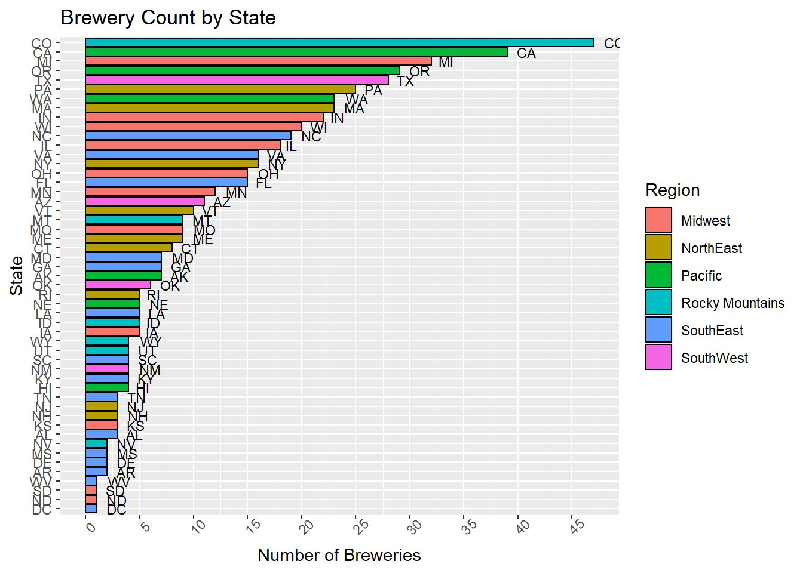
breweries_count%>%ggplot(aes(x=State,y=count/length(breweries$Brew_ID),fill=Region))+
geom_col(position = "dodge",col="black")+ylab("% of Breweries")+
theme(axis.text.x = element_text(angle = 45))+
scale_y_continuous(labels = scales::percent_format(accuracy = .5),breaks = scales::pretty_breaks(n = 10))+
ggtitle("Brewery % by State")+
geom_text(aes(label=State),hjust = -0.5,size = 3)+ coord_flip()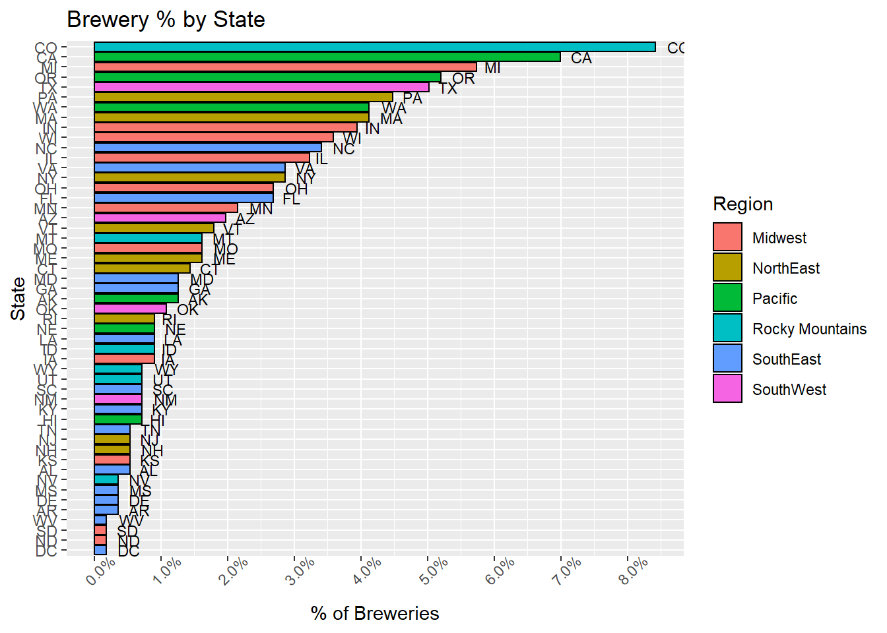
The following code will create a table showing the % of breweries and cumulative % of breweries by geographic region. The majority of breweries are located in Midwest and pacific regions, whereas there is a smaller market presence in the southwest and rocky mountain regions.
library(gt)
breweries_count$Percent = breweries_count$count/length(breweries$Brew_ID)
BrewbyRegion <- breweries_count%>%group_by(Region)%>%dplyr::summarize(Total_Count = sum(count) ,Total_Percent=sum(Percent))%>%arrange(desc(Total_Percent))
BrewbyRegion%>%mutate(Cumulative_Percent = cumsum(BrewbyRegion$Total_Percent))%>%gt()%>%tab_header(title = "Breweries by Region")| Breweries by Region | |||
|---|---|---|---|
| Region | Total_Count | Total_Percent | Cumulative_Percent |
| Midwest | 138 | 0.24731183 | 0.2473118 |
| Pacific | 107 | 0.19175627 | 0.4390681 |
| NorthEast | 102 | 0.18279570 | 0.6218638 |
| SouthEast | 91 | 0.16308244 | 0.7849462 |
| Rocky Mountains | 71 | 0.12724014 | 0.9121864 |
| SouthWest | 49 | 0.08781362 | 1.0000000 |
The following code produces a heat map showing the brewery count by state. Red indicates higher brewery count. Similar to above shows that CO,CA,MI,OR & TX have the most breweries by state.
library(ggplot2)
library(purrr)
library(dplyr)
library(tidyr)
states <- map_data("state")
findStateAbb <- function(state_name) {
m <- match(tools::toTitleCase(state_name), state.name)
if (is.na(m)) {
return(NA)
} else {
return(state.abb[m])
}
}
states$state <- map_chr(states$region, findStateAbb)
sbcm <- left_join(states, breweries_count, by=c("state" = "State"))
snames <- data.frame(state=state.abb, long=state.center$x, lat=state.center$y)
snames <- left_join(snames, breweries_count, by=c("state" = "State"))
snames <- snames%>%unite("comb", c("state", "count"), sep = ":", remove = FALSE)
ggplot(sbcm, aes(long, lat)) +
geom_polygon(aes(group=group, fill=count )) + scale_fill_gradient(low="white", high="red") +
geom_text(data=snames, aes(long, lat, label=comb), color="black", fontface = "bold") +
theme_void() +
ggtitle("Breweries by State") +
theme(plot.title = element_text(hjust = 0.5, face="bold"))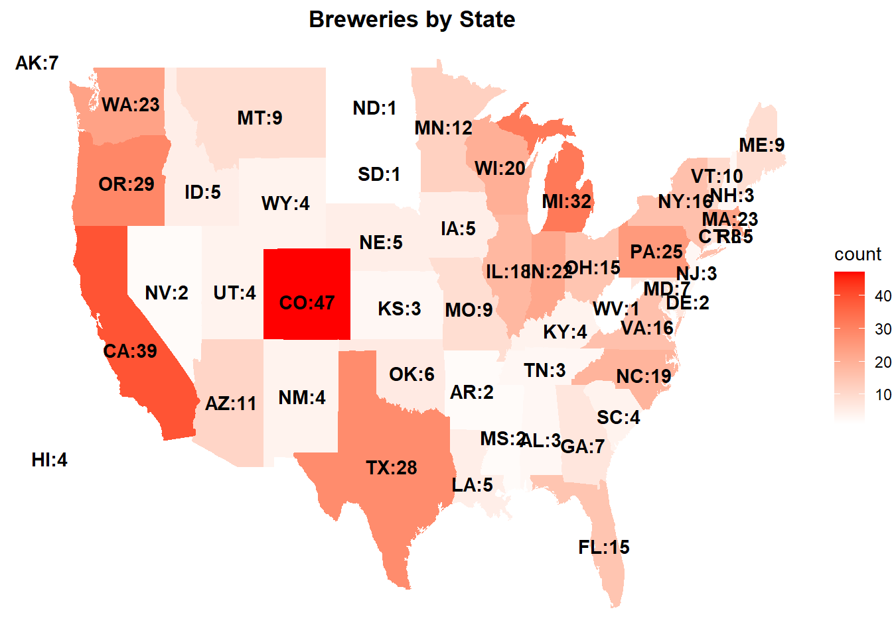
The code below standardizes the column names for breweries and beer so they have consistent names when the data is joined together. This is followed by performing a full join and an inner join of the beers and brewery data. The reason for this is to make sure these return the same output. There could be breweries in the beer table not in the brewery table and vice-versa. A summary of each of the merged data sets is done for quick visual inspection of each merge to check for any obvious differences. This is followed by utilizing the all.equal() function which checks for full equality between the data sets. Once full equality has been established, the inner join merge data will be used for all subsequent analysis questions. The code also shows the first 6 and last 6 rows of the merged data to show the join was done successfully.
names(beer)[5] <- "Brew_ID"
names(beer)[1] <- "Beer_Name"
names(breweries)[2] <- "Brewery_Name"
beer_brewery_fulljoin <- full_join(beer,breweries, by = "Brew_ID")
beer_brewery_innerjoin <- inner_join(beer,breweries, by = "Brew_ID")
summary(beer_brewery_fulljoin)## Beer_Name Beer_ID ABV IBU Brew_ID
## Length:2410 Min. : 1.0 Min. :0.00100 Min. : 4.00 Min. : 1.0
## Class :character 1st Qu.: 808.2 1st Qu.:0.05000 1st Qu.: 21.00 1st Qu.: 94.0
## Mode :character Median :1453.5 Median :0.05600 Median : 35.00 Median :206.0
## Mean :1431.1 Mean :0.05977 Mean : 42.71 Mean :232.7
## 3rd Qu.:2075.8 3rd Qu.:0.06700 3rd Qu.: 64.00 3rd Qu.:367.0
## Max. :2692.0 Max. :0.12800 Max. :138.00 Max. :558.0
## NA's :62 NA's :1005
## Style Ounces Brewery_Name City State
## Length:2410 Min. : 8.40 Length:2410 Length:2410 Length:2410
## Class :character 1st Qu.:12.00 Class :character Class :character Class :character
## Mode :character Median :12.00 Mode :character Mode :character Mode :character
## Mean :13.59
## 3rd Qu.:16.00
## Max. :32.00
## summary(beer_brewery_innerjoin)## Beer_Name Beer_ID ABV IBU Brew_ID
## Length:2410 Min. : 1.0 Min. :0.00100 Min. : 4.00 Min. : 1.0
## Class :character 1st Qu.: 808.2 1st Qu.:0.05000 1st Qu.: 21.00 1st Qu.: 94.0
## Mode :character Median :1453.5 Median :0.05600 Median : 35.00 Median :206.0
## Mean :1431.1 Mean :0.05977 Mean : 42.71 Mean :232.7
## 3rd Qu.:2075.8 3rd Qu.:0.06700 3rd Qu.: 64.00 3rd Qu.:367.0
## Max. :2692.0 Max. :0.12800 Max. :138.00 Max. :558.0
## NA's :62 NA's :1005
## Style Ounces Brewery_Name City State
## Length:2410 Min. : 8.40 Length:2410 Length:2410 Length:2410
## Class :character 1st Qu.:12.00 Class :character Class :character Class :character
## Mode :character Median :12.00 Mode :character Mode :character Mode :character
## Mean :13.59
## 3rd Qu.:16.00
## Max. :32.00
## all.equal(beer_brewery_fulljoin,beer_brewery_innerjoin)## [1] TRUE##first 6 rows
head(beer_brewery_innerjoin,6)## # A tibble: 6 x 10
## Beer_Name Beer_ID ABV IBU Brew_ID Style Ounces Brewery_Name City State
## <chr> <dbl> <dbl> <dbl> <dbl> <chr> <dbl> <chr> <chr> <chr>
## 1 Pub Beer 1436 0.05 NA 409 American Pale Lager 12 10 Barrel Brewing ~ Bend OR
## 2 Devil's Cup 2265 0.066 NA 178 American Pale Ale (~ 12 18th Street Brewery Gary IN
## 3 Rise of the Ph~ 2264 0.071 NA 178 American IPA 12 18th Street Brewery Gary IN
## 4 Sinister 2263 0.09 NA 178 American Double / I~ 12 18th Street Brewery Gary IN
## 5 Sex and Candy 2262 0.075 NA 178 American IPA 12 18th Street Brewery Gary IN
## 6 Black Exodus 2261 0.077 NA 178 Oatmeal Stout 12 18th Street Brewery Gary IN#last 6 rows
tail(beer_brewery_innerjoin,6)## # A tibble: 6 x 10
## Beer_Name Beer_ID ABV IBU Brew_ID Style Ounces Brewery_Name City State
## <chr> <dbl> <dbl> <dbl> <dbl> <chr> <dbl> <chr> <chr> <chr>
## 1 Rocky Mountain Oyst~ 1035 0.075 NA 425 American Stout 12 Wynkoop Brewing C~ Denv~ CO
## 2 Belgorado 928 0.067 45 425 Belgian IPA 12 Wynkoop Brewing C~ Denv~ CO
## 3 Rail Yard Ale 807 0.052 NA 425 American Amber ~ 12 Wynkoop Brewing C~ Denv~ CO
## 4 B3K Black Lager 620 0.055 NA 425 Schwarzbier 12 Wynkoop Brewing C~ Denv~ CO
## 5 Silverback Pale Ale 145 0.055 40 425 American Pale A~ 12 Wynkoop Brewing C~ Denv~ CO
## 6 Rail Yard Ale (2009) 84 0.052 NA 425 American Amber ~ 12 Wynkoop Brewing C~ Denv~ COThe below code checks to see if there are any missing or null values in the data set. It is identified that there is a substantial amount of missing data related to beer IBU. This is followed up by running tests on how this will affect subsequent analysis of “IBU vs ABV correlation” and “statistical clustering of IPA vs Ale”. A table is created to make sure that when missing IBU records are removed from the “IPA vs Ale” analysis, the missing data is not tied to closely to either Ale or IPA ruining the integrity of one of the groupings. In this case comparable amounts are missing for IPA and Ale (42% and 31% respectively). The “Ale vs IPA” analysis can continue without missing IBU beers. Similarly a histogram is created to check the shape and distribution of ABV variable, considering:
1.all samples
2.beers with only missing IBU
3.beers with no missing IBU.
The shape of ABV remains the same across all 3, which implies the “ABV vs Correlation” analysis can continue without the missing IBU values.
library(GGally)
library(naniar)
gg_miss_var(beer_brewery_innerjoin)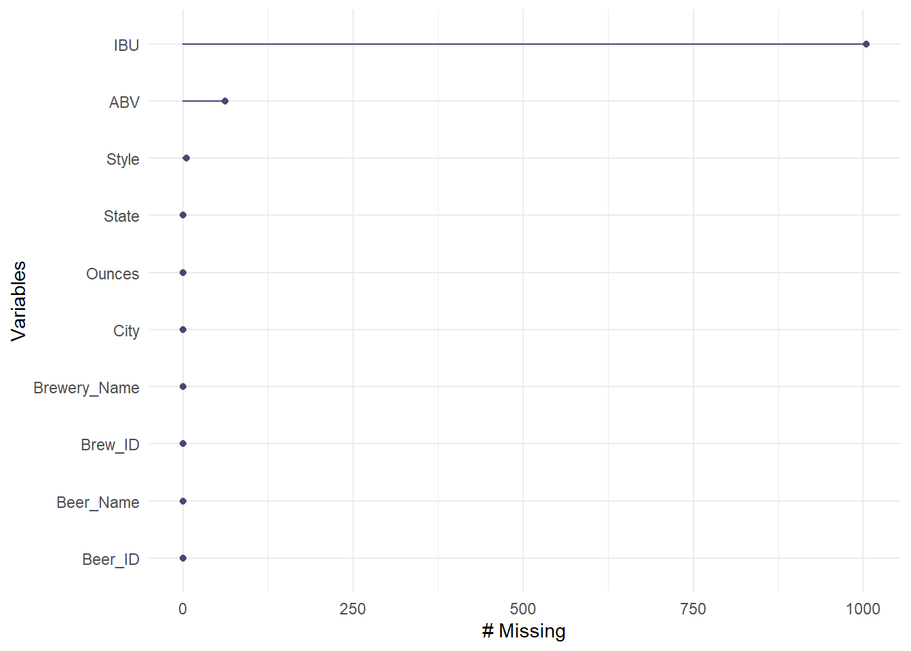
miss_var_summary(beer_brewery_innerjoin)%>%gt()%>%tab_header(title = "Missing Data Summary")| Missing Data Summary | ||
|---|---|---|
| variable | n_miss | pct_miss |
| IBU | 1005 | 41.7012448 |
| ABV | 62 | 2.5726141 |
| Style | 5 | 0.2074689 |
| Beer_Name | 0 | 0.0000000 |
| Beer_ID | 0 | 0.0000000 |
| Brew_ID | 0 | 0.0000000 |
| Ounces | 0 | 0.0000000 |
| Brewery_Name | 0 | 0.0000000 |
| City | 0 | 0.0000000 |
| State | 0 | 0.0000000 |
sapply(beer_brewery_innerjoin,function(x) sum(is.na(x)))## Beer_Name Beer_ID ABV IBU Brew_ID Style Ounces Brewery_Name
## 0 0 62 1005 0 5 0 0
## City State
## 0 0beer_brewery_innerjoin_IPAtest <- beer_brewery_innerjoin%>%
mutate(IPA_test =
grepl("IPA",beer_brewery_innerjoin$Style),
Ale_test = grepl("Ale",beer_brewery_innerjoin$Style),
India_test = grepl("India",beer_brewery_innerjoin$Style),
Pale_test = grepl("Pale",beer_brewery_innerjoin$Style),)
##classify all beer as IPA, ALE or other
Beer_brewery_Classify <- beer_brewery_innerjoin_IPAtest%>%mutate(Beer_Classify = case_when(
IPA_test == "TRUE" ~ "IPA",
Ale_test == "TRUE" ~ "Ale",
TRUE ~ "Other"))
#seperate out null IBU beer
beer_brewery_nullIBU <- Beer_brewery_Classify %>% filter(is.na(IBU))
Beer_brewery_Classify_Total <- Beer_brewery_Classify%>%group_by(Beer_Classify)%>%dplyr::summarize(TotalCount = n())%>%arrange(desc(TotalCount))
beer_brewery_nullIBU_Total <- beer_brewery_nullIBU%>%group_by(Beer_Classify)%>%dplyr::summarize(MissingCount = n())%>%arrange(desc(MissingCount))
#Impact of missing Values on Ale vs IPA analysis
left_join(Beer_brewery_Classify_Total,beer_brewery_nullIBU_Total, by = "Beer_Classify")%>%mutate(Percent_Missing = MissingCount/TotalCount)%>%
gt()%>%tab_header(title = "Analysis of Missing Values on Ale vs IPA")| Analysis of Missing Values on Ale vs IPA | |||
|---|---|---|---|
| Beer_Classify | TotalCount | MissingCount | Percent_Missing |
| Ale | 963 | 411 | 0.4267913 |
| Other | 876 | 415 | 0.4737443 |
| IPA | 571 | 179 | 0.3134851 |
ABV_NULLIBU <- data.frame(Beer_brewery_Classify%>%filter(is.na(IBU)&!is.na(ABV))%>%select(ABV))
ABV_NOTNULLIBU <- data.frame(Beer_brewery_Classify%>%filter(!is.na(IBU)&!is.na(ABV))%>%select(ABV))
ABV_ALLIBU <- data.frame(Beer_brewery_Classify%>%filter(!is.na(ABV))%>%select(ABV))
ABV_NULLIBU$Group = "Missing IBU"
ABV_NOTNULLIBU$Group = "Valid IBU"
ABV_ALLIBU$Group = "Combined"
ggplot(union_all(union_all(ABV_NULLIBU,ABV_NOTNULLIBU),ABV_ALLIBU), aes(x = ABV, fill = Group)) + # Draw overlaying histogram
geom_histogram(position = "identity", alpha = 0.2, bins = 50)+ggtitle("Effects of Missing IBU on ABV Distribution")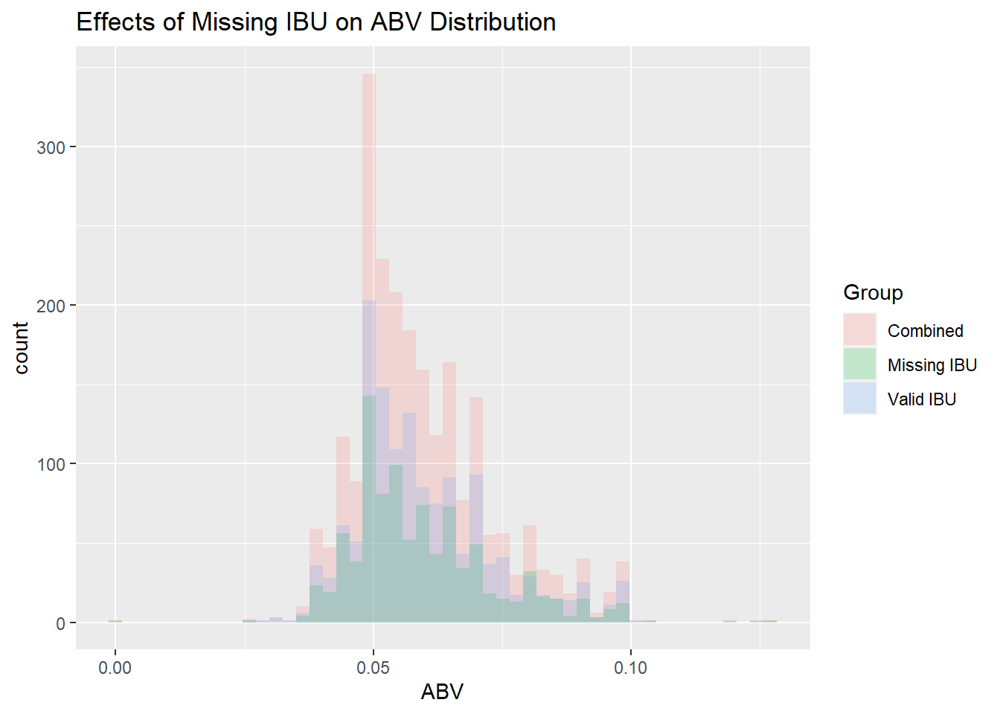
The following code removes the missing ABV values from the merged data set, finds the median ABV value for each state, then charts the results in a bar chart by median value descending. Higher Median ABV seen in South East States (KY, DC ,WV). Higher Brewery regions (Pacific & Midwest Region) have lower median ABV.
alc_content <- beer_brewery_innerjoin%>%filter(!is.na(ABV))
alc_content_median <- alc_content%>%group_by(State)%>%dplyr::summarize(Median_Alcoholic_Content = median(ABV))%>%arrange(desc(Median_Alcoholic_Content))
alc_content_median$State = factor(alc_content_median$State,level = alc_content_median$State[order((alc_content_median$Median_Alcoholic_Content))])
alc_content_median <- left_join(alc_content_median,breweries_count%>%distinct(State,Region),by = "State")
alc_content_median%>%ggplot(aes(x=State,y=Median_Alcoholic_Content,fill=Region))+
geom_col(position = "dodge",col="black")+ylab("Median % of Alcoholic Content")+
theme(axis.text.x = element_text(angle = 45))+
scale_y_continuous(labels = scales::percent_format(accuracy = .5),breaks = scales::pretty_breaks(n = 10))+
ggtitle("Median % of Alcoholic Content by State")+ coord_flip()+
geom_text(aes(label=State),hjust = -0.5,size = 3)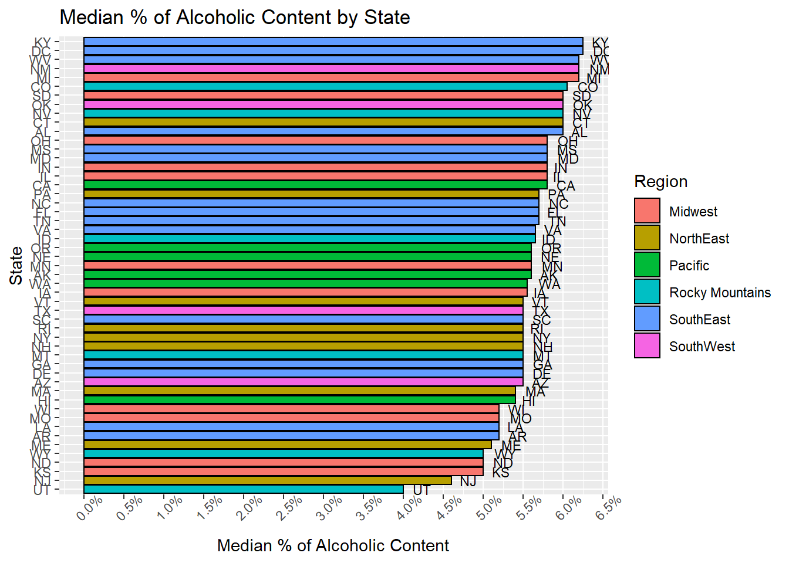
The following code removes the missing IBU values from the merged data set, finds the median IBU value for each state, then charts the results in a bar chart by median value descending. Higher Median IBU seen in South East States (WV, GA ,FL) with the largest being a North East outlier Maine (ME). Higher Brewery regions (Pacific & Midwest Region) have lower median IBU.
IBU_content <- beer_brewery_innerjoin%>%filter(!is.na(IBU))
IBU_content_median <- IBU_content%>%group_by(State)%>%dplyr::summarize(Median_IBU = median(IBU))%>%arrange(desc(Median_IBU))
IBU_content_median$State = factor(IBU_content_median$State,level = IBU_content_median$State[order((IBU_content_median$Median_IBU))])
IBU_content_median <- left_join(IBU_content_median,breweries_count%>%distinct(State,Region),by = "State")
IBU_content_median%>%ggplot(aes(x=State,y=Median_IBU,fill=Region))+
geom_col(position = "dodge",col="black")+ylab("Median IBU")+
theme(axis.text.x = element_text(angle = 45))+
scale_y_continuous(breaks = scales::pretty_breaks(n = 10))+
ggtitle("Median IBU by State")+ coord_flip()+
geom_text(aes(label=State),hjust = -0.5,size = 3)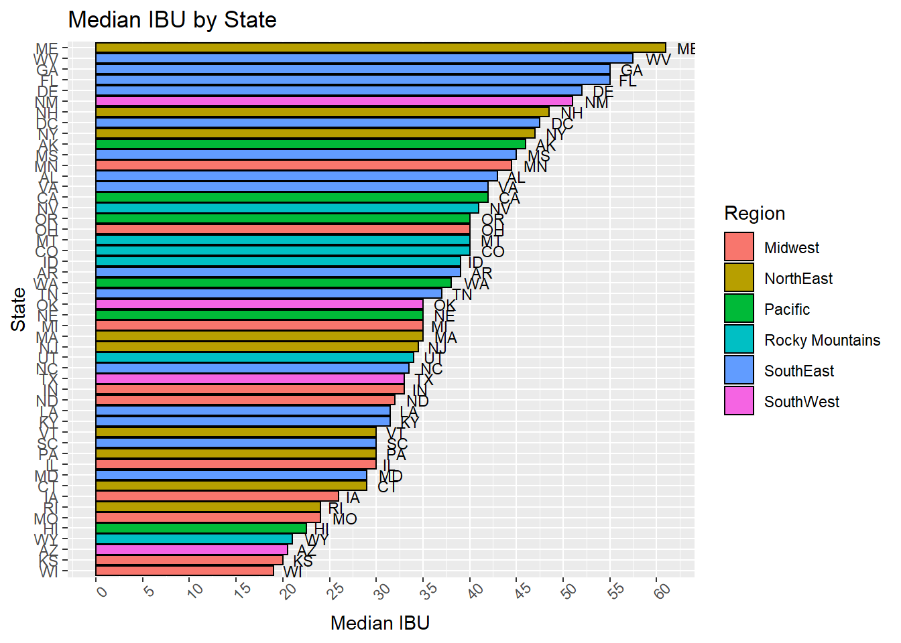
The following code removes the missing ABV values from the merged data set, finds the max ABV value for each state, then charts the results in a bar chart by max value descending. In addition provides examples of the beers that have the highest ABV values. The states with the highest ABV value are CO, KY, ID. The beers that make up these max values are:
CO: Lee Hill Series Vol. 5 - Belgian Style Quadrupel Ale (12.8% ABV)
KY: London Balling (12.5% ABV)
IN: Csar Russian Imperial Stout (12.0% ABV)
alc_content_max <- alc_content%>%group_by(State)%>%dplyr::summarize(Max_Alcoholic_Content = max(ABV))%>%arrange(desc(Max_Alcoholic_Content))
alc_content_max$State = factor(alc_content_max$State,level = alc_content_max$State[order((alc_content_max$Max_Alcoholic_Content))])
alc_content_max <- left_join(alc_content_max,breweries_count%>%distinct(State,Region),by = "State")
alc_content_max%>%ggplot(aes(x=State,y=Max_Alcoholic_Content,fill=Region))+
geom_col(position = "dodge",col="black")+ylab("Max % of Alcoholic Content")+
theme(axis.text.x = element_text(angle = 45))+
scale_y_continuous(labels = scales::percent_format(accuracy = .5),breaks = scales::pretty_breaks(n = 10))+
ggtitle("Max % of Alcoholic Content by State")+ coord_flip()+
geom_text(aes(label=State),hjust = -0.5,size = 3)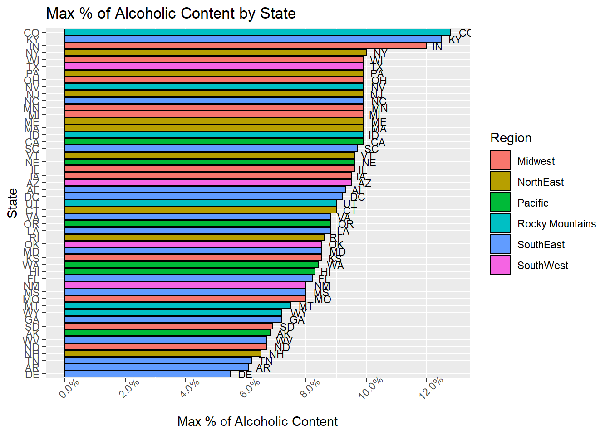
head(alc_content%>%group_by(Beer_Name,State)%>%dplyr::summarize(Max_Alcoholic_Content = max(ABV))%>%arrange(desc(Max_Alcoholic_Content)))## # A tibble: 6 x 3
## # Groups: Beer_Name [6]
## Beer_Name State Max_Alcoholic_Content
## <chr> <chr> <dbl>
## 1 Lee Hill Series Vol. 5 - Belgian Style Quadrupel Ale CO 0.128
## 2 London Balling KY 0.125
## 3 Csar IN 0.12
## 4 Lee Hill Series Vol. 4 - Manhattan Style Rye Ale CO 0.104
## 5 4Beans NY 0.1
## 6 3Beans NY 0.099The following code removes the missing IBU values from the merged data set, finds the max IBU value for each state, then charts the results in a bar chart by max value descending. In addition provides examples of the beers that have the highest IBU values. The states with the highest IBU values are OR & VA. The beers that make up these max values are:
1.OR : Bitter Bitch Imperial IPA (138 IBU)
2.VA : Trooper Valley IPA (135 IBU).
IBU_content_max <- IBU_content%>%group_by(State)%>%dplyr::summarize(Max_IBU = max(IBU))%>%arrange(desc(Max_IBU))
IBU_content_max$State = factor(IBU_content_max$State,level = IBU_content_max$State[order((IBU_content_max$Max_IBU))])
IBU_content_max <- left_join(IBU_content_max,breweries_count%>%distinct(State,Region),by = "State")
IBU_content_max%>%ggplot(aes(x=State,y=Max_IBU,fill=Region))+
geom_col(position = "dodge",col="black")+ylab("Max IBU")+
theme(axis.text.x = element_text(angle = 45))+
scale_y_continuous(breaks = scales::pretty_breaks(n = 10))+
ggtitle("Max IBU by State")+coord_flip()+
geom_text(aes(label=State),hjust = -0.5,size = 3)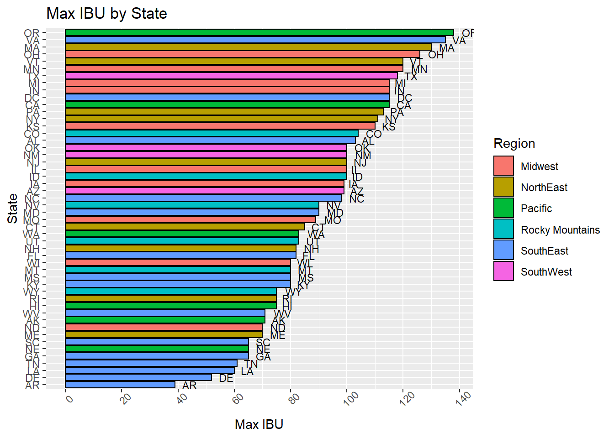
head(IBU_content%>%group_by(Beer_Name,State)%>%dplyr::summarize(Max_IBU = max(IBU))%>%arrange(desc(Max_IBU)))## # A tibble: 6 x 3
## # Groups: Beer_Name [6]
## Beer_Name State Max_IBU
## <chr> <chr> <dbl>
## 1 Bitter Bitch Imperial IPA OR 138
## 2 Troopers Alley IPA VA 135
## 3 Dead-Eye DIPA MA 130
## 4 Bay of Bengal Double IPA (2014) OH 126
## 5 Abrasive Ale MN 120
## 6 Heady Topper VT 120The code below provides the primary statistics of the ABV variable. In addition, histograms (with mean and median), box-plots and qq-plots to show the shape and distribution of ABV across the beers data set. The graphs and summary statistics show the ABV data is right skewed. The histogram which has the median (.056 in red) and mean (.059 in red) illustrate this. Majority of beers fall between ABV content of .04 and .07. The qqplot and box plot show there are outliers that show a non normal distribution.
alc_content%>%
summarize(Mean = mean(ABV),Standard_Deviation = sd(ABV),Median = median(ABV), Lower_Quartile = quantile(ABV, prob=.2500),Upper_Quartile = quantile(ABV, prob=.7500))%>%
gt()%>%tab_header(title = "Summary Statistics of ABV")| Summary Statistics of ABV | ||||
|---|---|---|---|---|
| Mean | Standard_Deviation | Median | Lower_Quartile | Upper_Quartile |
| 0.05977342 | 0.01354173 | 0.056 | 0.05 | 0.067 |
hist(alc_content$ABV,main="Histogram for ABV Content", xlab="ABV Content")
abline(v=mean(alc_content$ABV),col="blue") #mean
abline(v=median(alc_content$ABV),col="red") #median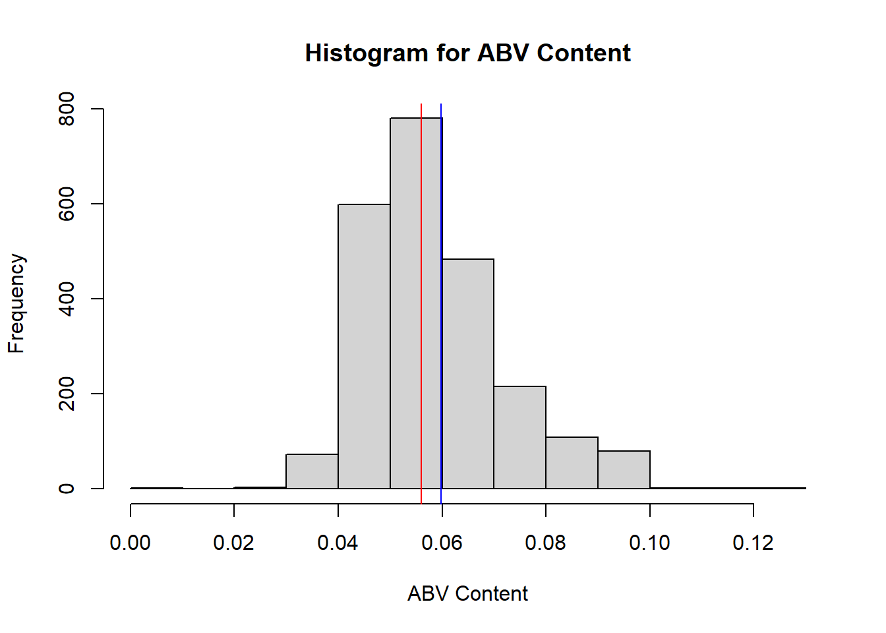
boxplot(alc_content$ABV,ylab = "ABV Content",main = "Boxplot of ABV Content")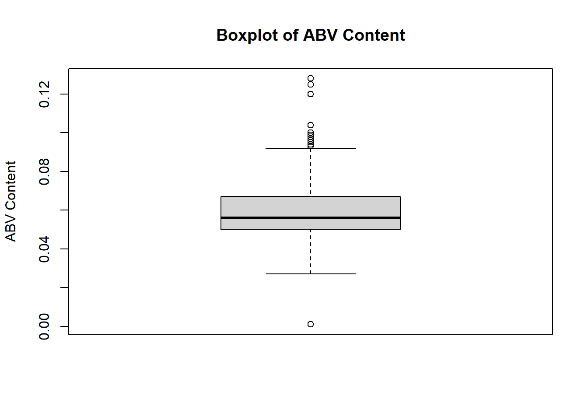
library("car")
qqPlot(alc_content$ABV,ylab="ABV Content")+title("QQ-plot of ABV Content")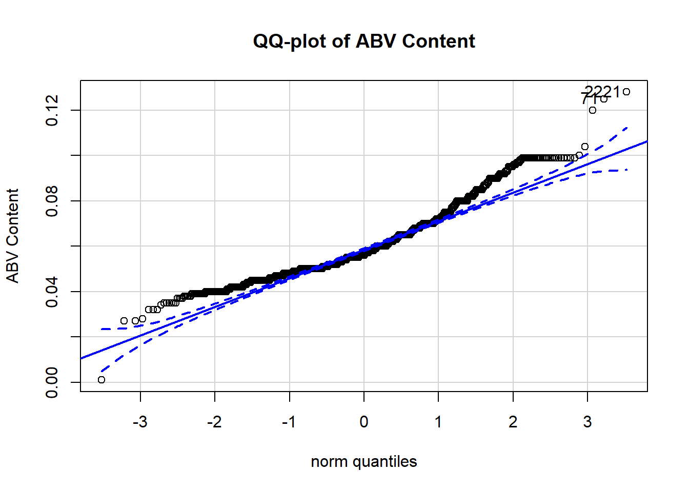
## integer(0)The code below first removes the beers with missing IBU and ABV values. The data is then run through the ggpairs() function which shows the shape and distribution of each variable, creates a scatter plot to identify visual evidence of linear correlation , and also provides the pearsons correlation coefficient. A separate scatter plot with a smooth line is also created to show evidence of the visual correlation. The graph shows strong visual evidence of correlation. This is supported by Pearson’s correlation coefficient for linear fit of .671. The Correlation can be explained easily from a brewing perspective, more hops are used to create more bitter beers, to offset or balance the taste brewers add more sugar. Sugar will ferment to create a higher alcoholic content.
Beer_Clean = beer_brewery_innerjoin %>% filter(!is.na(ABV) & !is.na(IBU))
Beer_Clean%>%select(ABV,IBU)%>%ggpairs()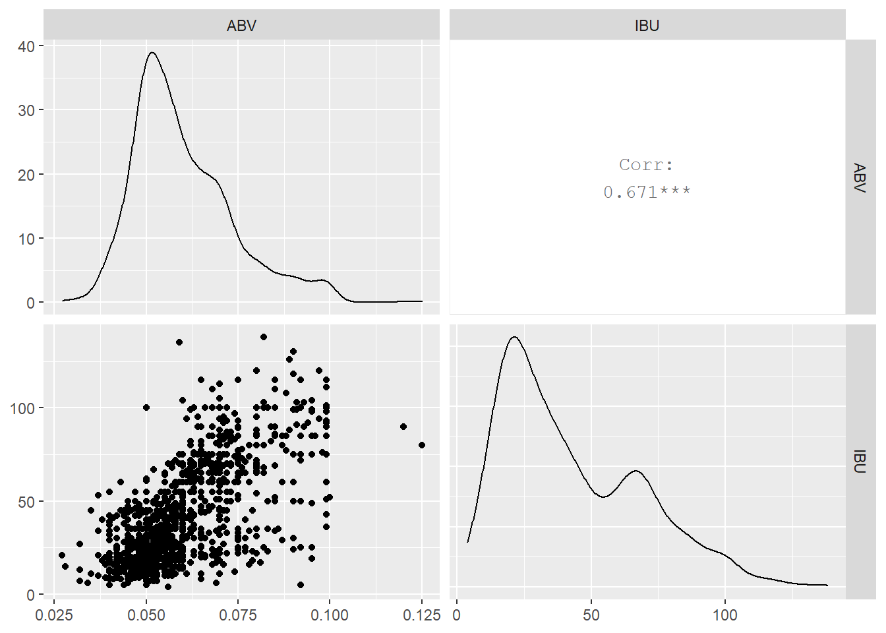
Beer_Clean%>%select(ABV,IBU)%>%ggplot(aes(x=ABV,y=IBU))+geom_point()+geom_smooth()+ggtitle("ABV vs IBU Fitted Line")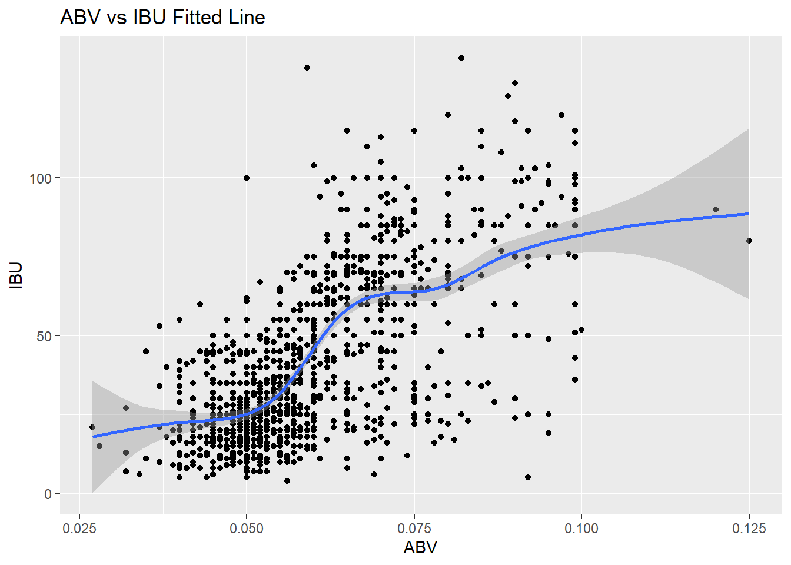
The code below will examine the relationship between IPA and Ale through multiple steps:
Scatter plot of ABV vs IBU with for IPA and Ale
KNN Test/Train Cross Validation
KNN Leave-One-Out Cross Validation
Naive-Bayes conditional probability model
The code below creates a scatter plot of ABV vs IBU looking only as beers identified as IPA or Pale Ale. Based on a beer’s style code is ran to classify it as either IPA, Ale or other (which is excluded form this analysis). The scatter plot is then color coded to show which beers are Ale and IPA. The graph will show strong evidence of clustering based on the ABV & IBU of the beer that will be explored through the KNN and Naive Bayes procedures.
Beer_Type <- Beer_Clean%>%group_by(Style)%>%dplyr::summarise(count =n())%>%arrange(desc(count))#%>%print(n=91)
Beer_Type_Analysis <- Beer_Type%>%
mutate(
IPA_test = grepl("IPA",Beer_Type$Style),
Ale_test = grepl("Ale",Beer_Type$Style),
India_test = grepl("India",Beer_Type$Style),
Pale_test = grepl("Pale",Beer_Type$Style))
Beer_Type_Classify <- Beer_Type_Analysis%>%mutate(Beer_Classify = case_when(
IPA_test == "TRUE" ~ "IPA",
Ale_test == "TRUE" ~ "Ale",
TRUE ~ "Other"))
left_join(Beer_Clean,Beer_Type_Classify%>%select(Style,Beer_Classify),by = "Style")%>%
filter(Beer_Classify == "Ale" | Beer_Classify == "IPA")%>%select(ABV,IBU,Beer_Classify)%>%
ggplot(aes(x=ABV,y=IBU,fill=Beer_Classify,color=Beer_Classify))+geom_point()+ggtitle("ABV vs IBU for IPA & Ale")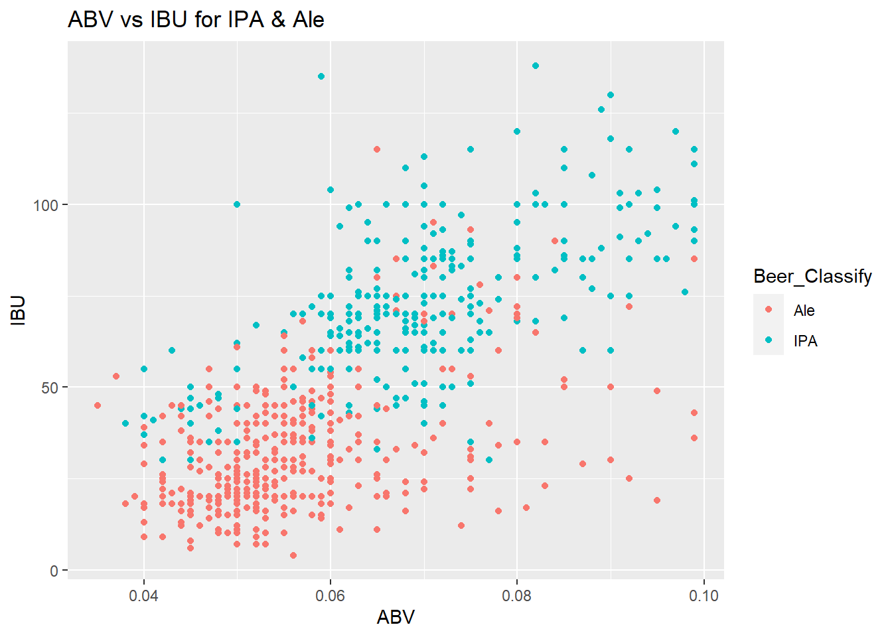
The scatter plot of ABV vs IBU for IPA and Ale shows strong evidence of clustering. Ale is more predominant in the lower left quadrant having lower ABV and IBU values, and IPA in the top right quadrant with higher ABV and IBU. The following code will run a KNN Test/Train Model (abbreviated as KNN-TT) to test the statistical evidence of this correlation. The concept of KNN is any point on the scatter plot will be categorized as either Ale or IPA depending on the classification of the majority of the nearest neighboring points. The number of nearest neighboring points used is the “K-variable”, K can be set to any value.
The KNN-TT will randomly break the data set into two groups, a testing and training set. The test set is usually smaller, in this case will be 30% of the samples, and the remaining 70% going to the training set. Each value of the test set will be matched up against the training set for when identifying nearest neighboring points. The concept here that by testing a random part of your sample against itself, this checks the accuracy of the prospective model prior to adding or testing new values.
The KNN-TT will return 3 primary statistics:
Accuracy: the number of all correct predictions divided by the total number of the dataset
Sensitivity: the number of correct positive predictions divided by the total number of positives
Specificity: the number of correct negative predictions divided by the total number of negatives
To maximize the accuracy of the KNN-TT model, 500 simulations of different random Test/Train sets will be conducted. In addition the number of nearest neighbors (k-value) will be tested 1-50 for each of the 500 simulations.
The code returns, based on the 500 simulations what values of K produce the most accurate clustering results. The KNN-TT model reveals accuracy, sensitivity and specificity levels around 85%,88% and 81% respectively. The K-value maximizes these figures when between 33-39. The KNN-LO model corroborates the KNN-TT model and proves there is strong evidence of statistical clustering between IPA and other Ales.
library(class)
library(caret)
Beer_Clean_Classify <- left_join(Beer_Clean,Beer_Type_Classify, by = "Style")
Beer_Ale_Or_IPA <- Beer_Clean_Classify%>%filter(Beer_Classify == "IPA"|Beer_Classify == "Ale")
iterations = 500
numks = 50
split_perc = .7
beer_k_tt_masterAcc = matrix(nrow=iterations, ncol = numks)
beer_k_tt_masterSpef = matrix(nrow=iterations, ncol = numks)
beer_k_tt_masterSens = matrix(nrow=iterations, ncol = numks)
for(j in 1:iterations)
{
accs = data.frame(accuracy = numeric(50),k=numeric(50))
train_Indicies = sample(1:dim(Beer_Ale_Or_IPA)[1],round(split_perc*dim(Beer_Ale_Or_IPA)[1]))
train = Beer_Ale_Or_IPA[train_Indicies,]
test = Beer_Ale_Or_IPA[-train_Indicies,]
train <- train%>%mutate(ABV_scaled = scale(ABV), IBU_scaled = scale(IBU))
test <- test%>%mutate(ABV_scaled = scale(ABV), IBU_scaled = scale(IBU))
for(i in 1:50)
{
classifications = knn(train%>%select(ABV_scaled,IBU_scaled),test%>%select(ABV_scaled,IBU_scaled),train$Beer_Classify,prob=TRUE,k=i)
table(test$Beer_Classify,classifications)
CM_beer_k_tt = confusionMatrix(table(test$Beer_Classify,classifications))
beer_k_tt_masterAcc[j,i] = CM_beer_k_tt$overall[1]
beer_k_tt_masterSpef[j,i] = CM_beer_k_tt$byClass[2]
beer_k_tt_masterSens[j,i] = CM_beer_k_tt$byClass[1]
}
}
beer_k_tt_meanAcc = colMeans(beer_k_tt_masterAcc)
beer_k_tt_meanSens = colMeans(beer_k_tt_masterSens)
beer_k_tt_meanSpef = colMeans(beer_k_tt_masterSpef)
#results of accuracy for K
head(data.frame(
K_value = seq(1,numks,1)
,Avg_Accuracy = beer_k_tt_meanAcc
,Avg_Sensitivity = beer_k_tt_meanSens
,Avg_Specificity = beer_k_tt_meanSpef)%>%arrange(desc(Avg_Accuracy)))%>%gt()%>%tab_header(title = "KNN-70/30 Test/Train Model (500 iterations of K:1-50)")| KNN-70/30 Test/Train Model (500 iterations of K:1-50) | |||
|---|---|---|---|
| K_value | Avg_Accuracy | Avg_Sensitivity | Avg_Specificity |
| 35 | 0.8566290 | 0.8871426 | 0.8164118 |
| 33 | 0.8565371 | 0.8866067 | 0.8168839 |
| 34 | 0.8564664 | 0.8868810 | 0.8163633 |
| 37 | 0.8562261 | 0.8871394 | 0.8155277 |
| 38 | 0.8561837 | 0.8873572 | 0.8151695 |
| 36 | 0.8561343 | 0.8869603 | 0.8155403 |
The scatter plot of ABV vs IBU for IPA and Ale shows strong evidence of clustering. Ale is more predominant in the lower left quadrant having lower ABV and IBU values, and IPA in the top right quadrant with higher ABV and IBU. The following code will run a KNN Leave-One-Out Model (abbreviated as KNN-LO) to test the statistical evidence of this correlation. The concept of KNN is any point on the scatter plot will be categorized as either Ale or IPA depending on the classification of the majority of the nearest neighboring points. The number of nearest neighboring points used is the “K-variable”, K can be set to any value.
The KNN-LO will test each element of the sample against all other elements for determining the nearest neighboring points. The concept here that by testing a each sample against all others, this checks the accuracy of the prospective model prior to adding or testing new values.
The KNN-LO will return 3 primary statistics:
Accuracy: the number of all correct predictions divided by the total number of the dataset
Sensitivity: the number of correct positive predictions divided by the total number of positives
Specificity: the number of correct negative predictions divided by the total number of negatives
To maximize the accuracy of the KNN-LO model, 500 simulations will be conducted. In addition the number of nearest neighbors (k-value) will be tested 1-50 for each of the 500 simulations.
The code returns, based on the 500 simulations what values of K produce the most accurate clustering results. The KNN-LO model reveals accuracy, sensitivity and specificity levels around 86%,88% and 84% respectively. The K-value maximizes these figures when between 20s-30s. The KNN-LO model corroborates the KNN-TT model and proves there is strong evidence of statistical clustering between IPA and other Ales.
library(class)
library(caret)
Beer_Ale_Or_IPA$ABV_scaled = scale(Beer_Ale_Or_IPA$ABV)
Beer_Ale_Or_IPA$IBU_scaled = scale(Beer_Ale_Or_IPA$IBU)
iterations = 500
numks = 50
masterAcc_l = matrix(nrow=iterations, ncol = numks)
masterSens_l = matrix(nrow=iterations, ncol = numks)
masterSpef_l = matrix(nrow=iterations, ncol = numks)
for(j in 1:iterations)
{
accs_l = data.frame(accuracy = numeric(50),k=numeric(50))
for(i in 1:50)
{ classifications_l = knn.cv(Beer_Ale_Or_IPA%>%select(ABV_scaled,IBU_scaled),Beer_Ale_Or_IPA$Beer_Classify,prob=TRUE,k=i)
CM_l = confusionMatrix(table(Beer_Ale_Or_IPA$Beer_Classify,classifications_l))
masterAcc_l[j,i] = CM_l$overall[1]
masterSpef_l[j,i] = CM_l$byClass[2]
masterSens_l[j,i] = CM_l$byClass[1]
}
}
meanAcc_l = colMeans(masterAcc_l)
meanSens_l = colMeans(masterSens_l)
meanSpef_l = colMeans(masterSpef_l)
k_results_l <- data.frame(kvalue = seq(1,numks,1),
accuracy_avg = meanAcc_l,
Sensitivity_avg = meanSens_l,
Specificity_avg = meanSpef_l
)
head(k_results_l%>%arrange(desc(accuracy_avg)))%>%gt()%>%tab_header(title = "KNN-Leave one Out (500 iterations of K:1-50)")| KNN-Leave one Out (500 iterations of K:1-50) | |||
|---|---|---|---|
| kvalue | accuracy_avg | Sensitivity_avg | Specificity_avg |
| 23 | 0.8681229 | 0.8861802 | 0.8425310 |
| 29 | 0.8670106 | 0.8803854 | 0.8474623 |
| 27 | 0.8655487 | 0.8808811 | 0.8433884 |
| 24 | 0.8650445 | 0.8820610 | 0.8407040 |
| 37 | 0.8649936 | 0.8956300 | 0.8246529 |
| 48 | 0.8649301 | 0.8898657 | 0.8309629 |
The scatter plot of ABV vs IBU for IPA and Ale shows strong evidence of clustering. Ale is more predominant in the lower left quadrant having lower ABV and IBU values, and IPA in the top right quadrant with higher ABV and IBU. The following code will run a Naive-Bayes Model (abbreviated as NB) to test the statistical evidence of this correlation. The concept of NB is any point on the scatter plot will be categorized as either Ale or IPA depending based on conditional probabilities. It works on Bayes theorem of probability to predict the class of data sets.
The NB will return 3 primary statistics:
Accuracy: the number of all correct predictions divided by the total number of the dataset
Sensitivity: the number of correct positive predictions divided by the total number of positives
Specificity: the number of correct negative predictions divided by the total number of negatives
To maximize the accuracy of the NB model, 500 simulations will be conducted. The NB model reveals accuracy, sensitivity and specificity levels around 84%,86% and 80% respectively. The NB model corroborates the KNN model and proves there is strong evidence of statistical clustering between IPA and other Ales.
library(e1071)
iterations_nb = 500
masterAcc_nb = matrix(nrow = iterations)
masterSens_nb = matrix(nrow = iterations)
masterSpef_nb = matrix(nrow = iterations)
splitPerc = .7 #Training / Test split Percentage
for(j in 1:iterations_nb)
{
trainIndices_nb = sample(1:dim(Beer_Ale_Or_IPA)[1],round(splitPerc * dim(Beer_Ale_Or_IPA)[1]))
train_nb = Beer_Ale_Or_IPA[trainIndices_nb,]
test_nb = Beer_Ale_Or_IPA[-trainIndices_nb,]
model_nb = naiveBayes(train_nb%>%select(ABV,IBU),as.factor(train_nb$Beer_Classify),laplace = 1)
table(predict(model_nb,test_nb%>%select(ABV,IBU)),as.factor(test_nb$Beer_Classify))
CM_nb = confusionMatrix(table(predict(model_nb,test_nb%>%select(ABV,IBU)),as.factor(test_nb$Beer_Classify)))
masterAcc_nb[j] = CM_nb$overall[1]
masterSens_nb[j] = CM_nb$byClass[1]
masterSpef_nb[j] = CM_nb$byClass[2]
}
MeanAcc_nb = colMeans(masterAcc_nb)
MeanSens_nb = colMeans(masterSens_nb)
MeanSpef_nb = colMeans(masterSpef_nb)
nb_results <- data.frame(
accuracy_avg = MeanAcc_nb,
Sensitivity_avg = MeanSens_nb,
Specificity_avg = MeanSpef_nb)%>%gt()%>%tab_header(title = "Naive-Bayes (500 iterations)")
nb_results| Naive-Bayes (500 iterations) | ||
|---|---|---|
| accuracy_avg | Sensitivity_avg | Specificity_avg |
| 0.8427067 | 0.8698485 | 0.8048919 |
The beer and brewery data provides the current landscape as to what markets are served and what products are being sold nationwide. The following code will provide summaries on the following:
Breweries Per Million People of State Population
The most popular beer style by state and nationally
The least popular beer style by state and nationally
The code below creates a bar chart showing the brewery density by each state’s population. The States are sorted in descending order based on State Population, similarly the states are color coded to show which states have the highest populations. The bars in the chart show the brewery density by population of each state. Additional code is done to show the main summary statistics of the brewery density (mean, median, quartiles). The recommendation would be for Budweiser to amp up opening more breweries in the Group 1 State Population Ranking groups where brewery density is lower than the national mean/median. States like CA, TX, FL have potential for many more breweries to be opened based on state population and are nowhere near as brewery dense as states like CO, OR or VT. The code shows the number of incremental breweries that could be added to match these numbers.
breweries_count$Population = c(5.76,39.51,9.99,4.22,29,12.8,6.89,7.61,6.73,5.82,10.49,12.67,19.45,8.54,21.48,11.69,
5.64,7.28,0.62,1.34,6.14,1.07,3.57,0.73,10.62,6.05,3.96,3.16,1.79,4.65,1.93,1.06,
1.42,4.47,2.1,5.15,3.21,0.58,4.9,2.91,1.36,8.88,6.83,3.02,0.97,2.98,3.08,0.71,0.76,0.88,0.58)
breweries_count <-breweries_count%>%arrange(desc(Population))
breweries_count$rank = order(order(breweries_count$Population, decreasing=TRUE))
breweries_count$State_Population_Ranking = case_when(
breweries_count$rank <= 10 ~ "1. 1-10",
breweries_count$rank <= 20 ~ "2. 11-20",
breweries_count$rank <= 30 ~ "3. 21-30",
breweries_count$rank <= 40 ~ "4. 31-40",
TRUE ~ "5. 41+")
breweries_count$State = factor(breweries_count$State,level = breweries_count$State[order(((breweries_count$Population)))])
breweries_count$Breweries_per_MM = round(breweries_count$count/ breweries_count$Population,digits = 2)
breweries_count <- breweries_count%>%unite("comb", c("State", "Breweries_per_MM"), sep = ":", remove = FALSE)
breweries_count%>%ggplot(aes(y=State,x=Breweries_per_MM,fill=State_Population_Ranking))+
geom_col(position = "dodge",col="black")+xlab("Number of Breweries per Million Population")+
theme(axis.text.y = element_text(angle = 0))+
ggtitle("Breweries Per Million People of State Population")+
geom_text(aes(label=comb),hjust = -0.2,size = 3)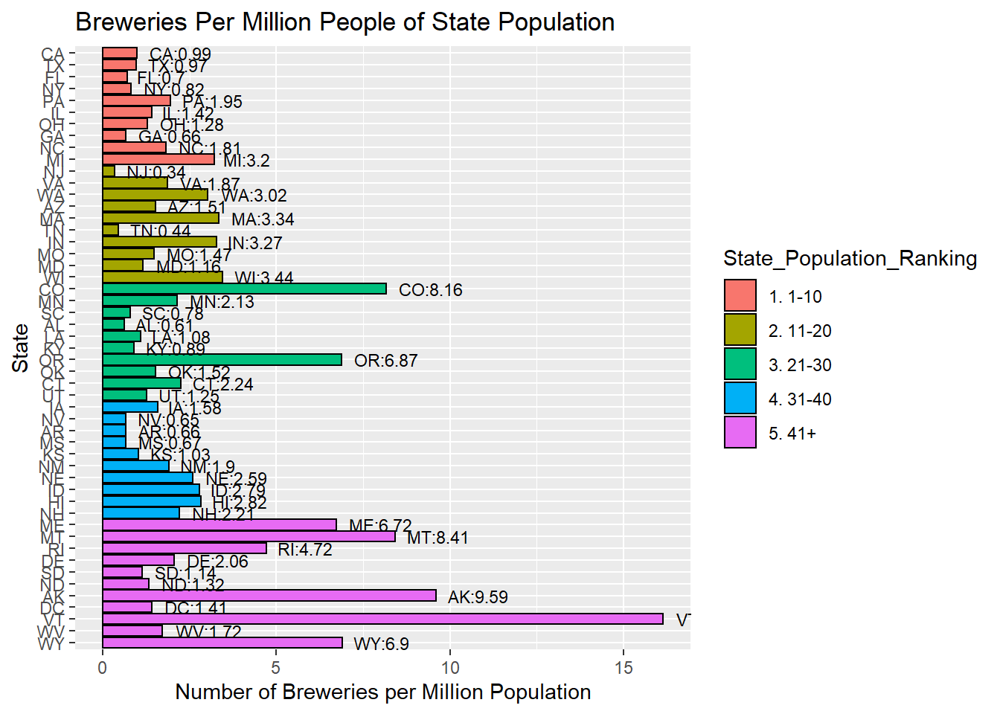
density_stats <- data.frame(
Statistic = c("Mean","Median","Lower Quartile","Upper Quartile"),
Measure = c(mean(breweries_count$Breweries_per_MM),median(breweries_count$Breweries_per_MM),
quantile(breweries_count$Breweries_per_MM, prob=.2500),quantile(breweries_count$Breweries_per_MM, prob=.7500))
)
density_stats%>%gt()%>%tab_header(title = "Summary: Brewery Density by State Population")| Summary: Brewery Density by State Population | |
|---|---|
| Statistic | Measure |
| Mean | 2.670784 |
| Median | 1.580000 |
| Lower Quartile | 1.010000 |
| Upper Quartile | 2.920000 |
breweries_count$Density_Mean = density_stats%>%filter(Statistic == "Mean")%>%select(Measure)
breweries_count$Density_Median = density_stats%>%filter(Statistic == "Median")%>%select(Measure)
breweries_count%>%mutate(New_Breweries_To_Match_Mean = round((Density_Mean$Measure - Breweries_per_MM)*Population,digits=0),
New_Breweries_To_Match_Median = round((Density_Median$Measure - Breweries_per_MM)*Population,digits=0)
)%>%select(State,Current_Brewery_Count = count,New_Breweries_To_Match_Mean,New_Breweries_To_Match_Median)%>%
head(n=4)%>%gt()%>%tab_header(title = "Brewery Opportunities")| Brewery Opportunities | |||
|---|---|---|---|
| State | Current_Brewery_Count | New_Breweries_To_Match_Mean | New_Breweries_To_Match_Median |
| CA | 39 | 66 | 23 |
| TX | 28 | 49 | 18 |
| FL | 15 | 42 | 19 |
| NY | 16 | 36 | 15 |
The code below shows what the most popular beer style served is by state, by taking a count of the unique beer names and summarizing by style and state. The graph reveals that American IPA & Pale Ales are the most popular in the biggest brewery markets (CO,CA,MI,OR) as well as nationwide. The recommendation would be for Budweiser to amp up production and development of IPA and Pale Ale products and lead with these products in any kind of new brewery or market expansion. Special attention should be given to states like CT, OK, GA where IPA/Pale ale is not the most popular, product offerings can be curtailed to their individual tastes.
library(data.table)
beer_style1_byState <- beer_brewery_innerjoin%>%distinct(Beer_Name,Style,State)%>%group_by(State,Style)%>%summarize(count=n())
beer_style1_byState <- as.data.table(beer_style1_byState)
beer_style1_byState[,valRank:=rank(-count,ties.method="first"),by="State"]
beer_style1_byState1 <- left_join(breweries_count,as.data.frame(beer_style1_byState)%>%filter(valRank==1)%>%select(State,Style), by= c("State" = "State"))
beer_style1_byState1$State = factor(beer_style1_byState1$State,level = beer_style1_byState1$State[order((beer_style1_byState1$count))])
beer_style1_byState1%>%
ggplot(aes(x=State,y=count,fill=Style))+
geom_col(position = "dodge",col="black")+ylab("Number of Breweries")+
theme(axis.text.x = element_text(angle = 45))+
scale_y_continuous(breaks = scales::pretty_breaks(n = 10))+
ggtitle("Most Popular Style by State")+
geom_text(aes(label=State),hjust = -0.5,size = 3)+ coord_flip()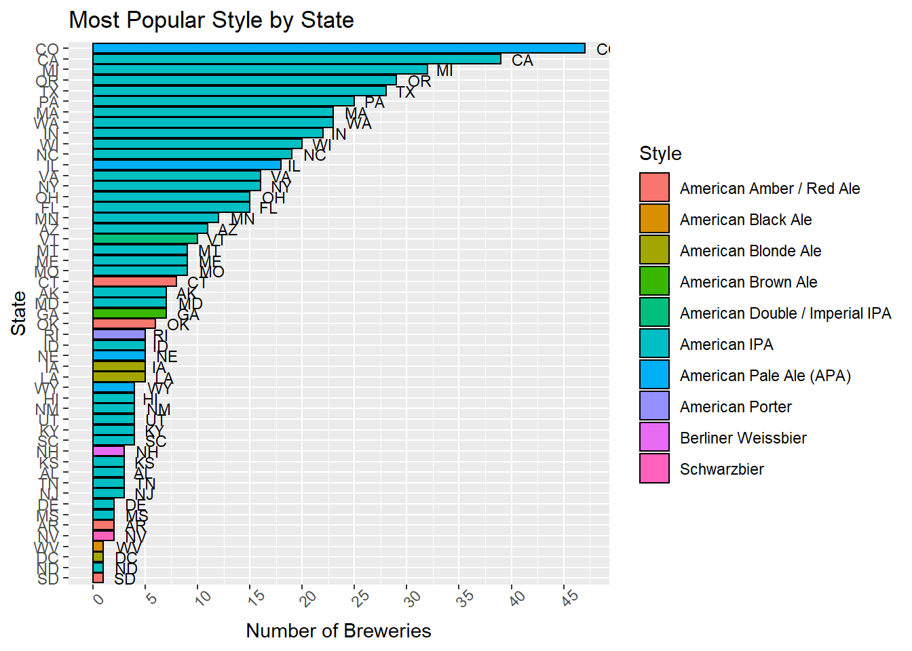
beer_style1_byState1_agr <- beer_style1_byState1%>%group_by(Style)%>%summarize(State_Total=n())
beer_style1_byState1_agr$Style = factor(beer_style1_byState1_agr$Style,level = beer_style1_byState1_agr$Style[order((beer_style1_byState1_agr$State_Total))])
beer_style1_byState1_agr%>%
ggplot(aes(x=Style,y=State_Total,fill=Style))+
geom_col(position = "dodge",col="black")+ylab("Number of States")+
theme(axis.text.x = element_text(angle = 45))+
scale_y_continuous(breaks = scales::pretty_breaks(n = 10))+
ggtitle("Most Popular Style")+
geom_text(aes(label=State_Total),hjust = -0.5,size = 3)+coord_flip()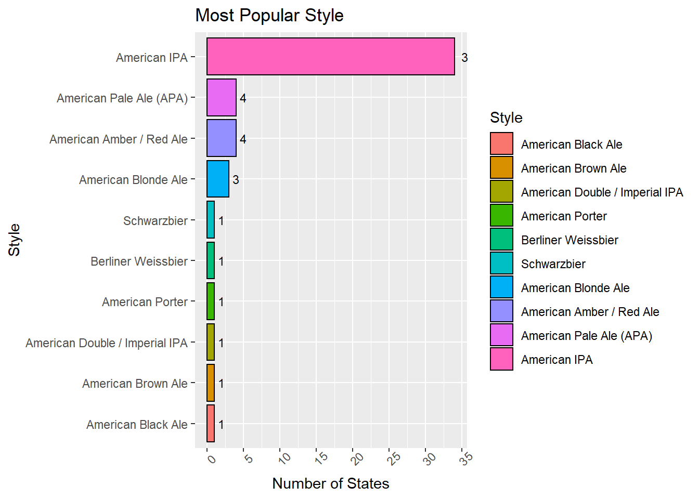
The code below shows what the least popular beer style served is by state, by taking a count of the unique beer names and summarizing by style and state. The graph reveals that American Amber/Red Ale & Altbier are the least popular in the biggest brewery markets (CO,MI,OR,TX) as well as nationwide. The recommendation would be for Budweiser to phase out or limit products American Amber/Red Ale & Altbier and not lead with these products in any kind of new brewery or market expansion. Special attention should be given to CA, with competition in CA from established wineries, perhaps American Barleywine should be phased out
library(data.table)
beer_style1_byState <- beer_brewery_innerjoin%>%distinct(Beer_Name,Style,State)%>%group_by(State,Style)%>%summarize(count=n())
beer_style1_byState <- as.data.table(beer_style1_byState)
beer_style1_byState[,LastRank:=rank(count,ties.method="first"),by="State"]
beer_style_last_byState1 <- left_join(breweries_count,as.data.frame(beer_style1_byState)%>%filter(LastRank==1)%>%select(State,Style), by= c("State" = "State"))
beer_style_last_byState1$State = factor(beer_style_last_byState1$State,level = beer_style_last_byState1$State[order((beer_style_last_byState1$count))])
beer_style_last_byState1_agr <- beer_style_last_byState1%>%group_by(Style)%>%summarize(State_Total=n())
beer_style_last_byState1_agr$Style = factor(beer_style_last_byState1_agr$Style,level = beer_style_last_byState1_agr$Style[order((beer_style_last_byState1_agr$State_Total))])
beer_style_last_byState1%>%
ggplot(aes(x=State,y=count,fill=Style))+
geom_col(position = "dodge",col="black")+ylab("Number of Breweries")+
theme(axis.text.x = element_text(angle = 45))+
scale_y_continuous(breaks = scales::pretty_breaks(n = 10))+
ggtitle("Least Popular Style by State")+
geom_text(aes(label=State),hjust = -0.5,size = 3)+ coord_flip()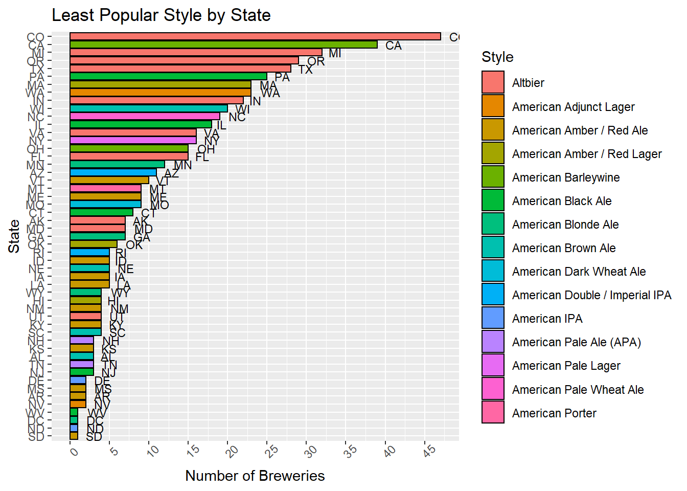
beer_style_last_byState1_agr%>%
ggplot(aes(x=Style,y=State_Total,fill=Style))+
geom_col(position = "dodge",col="black")+ylab("Number of States")+
theme(axis.text.x = element_text(angle = 45))+
scale_y_continuous(breaks = scales::pretty_breaks(n = 10))+
ggtitle("Least Popular Style")+
geom_text(aes(label=State_Total),hjust = -0.5,size = 3)+coord_flip()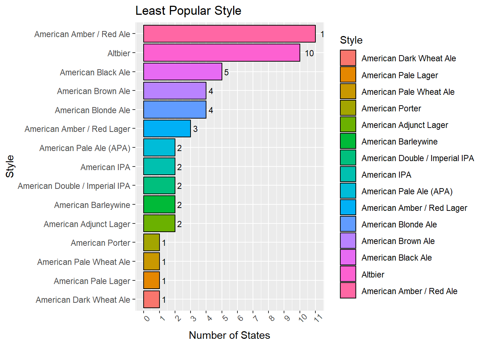